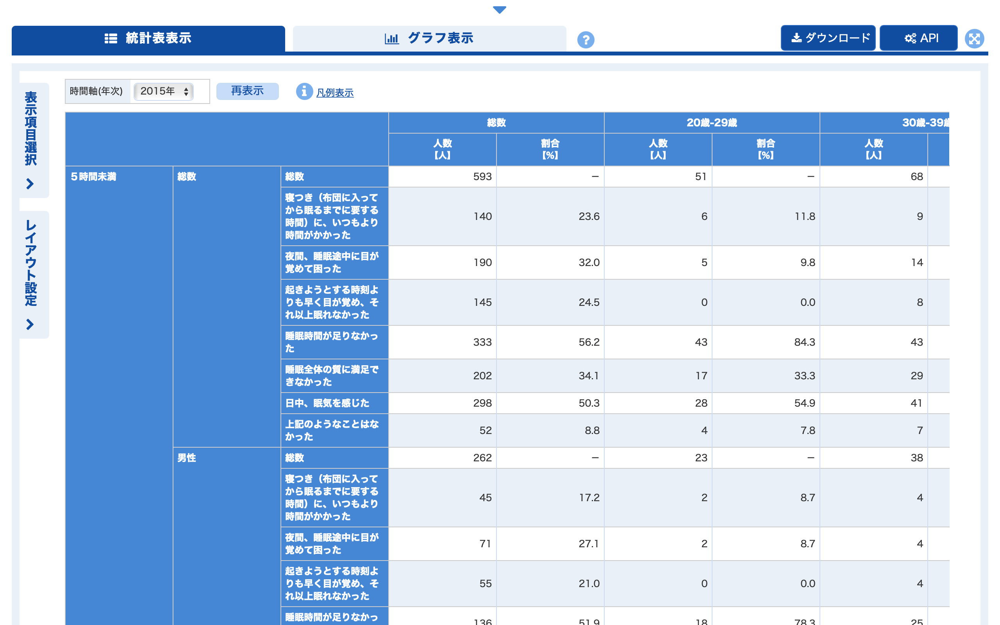
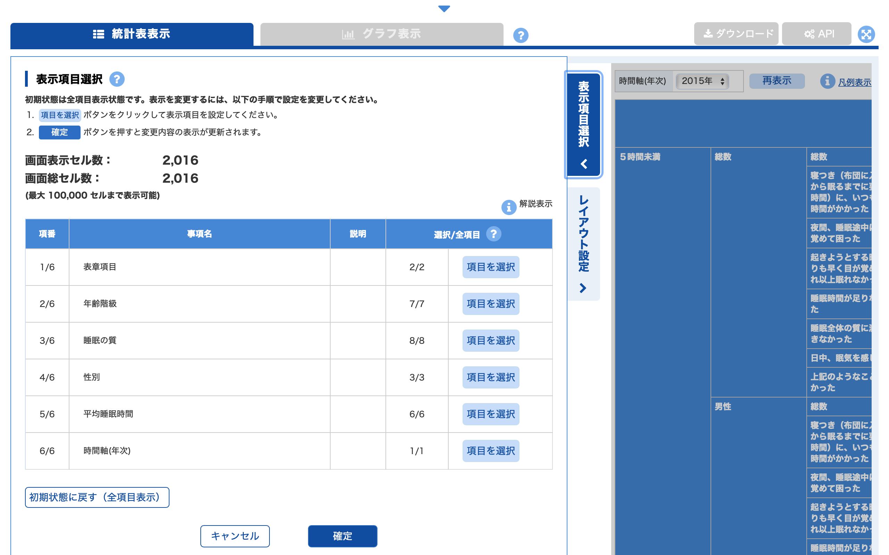
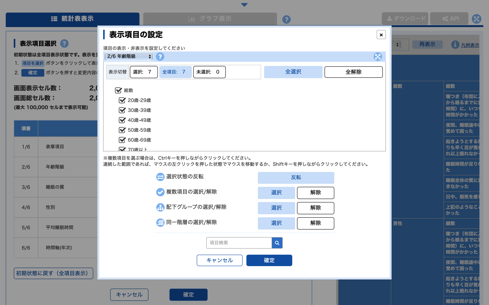
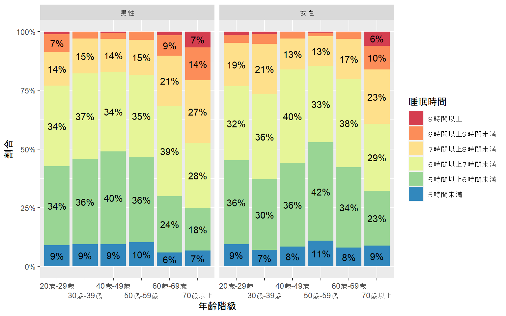

install.packages("jpstat")この記事について
この記事は「R Advent Calendar 2022」の12日目の記事です．
昨年，日本で政府統計の整備が始まってから150年を迎えました（平成・令和の統計年表）．最近では，政府統計の総合窓口（e-Stat）で，様々な政府統計データを閲覧・ダウンロードすることができるようになりました．
e-Statには，便利なAPI機能も提供されています（利用ガイドはこちら．あらかじめ利用規約を確認してください．API機能を利用する際は，事前にユーザ登録を行ってください）．
この記事では，Rのjpstatパッケージを使って，e-Stat APIを効率的に用いる方法を紹介します．
e-Statについて
e-Statには，様々な政府統計のデータベースが整理されていますが，ここでは，2015年国民健康・栄養調査の調査結果から睡眠時間に関するデータベースを見てみましょう．
データベースを開くと以下のように統計表が表示され，右上の「ダウンロード」ボタンからデータをダウンロードすることができます．

画面左上の「表示項目選択」ボタンをクリックすると，表示するデータの項目（年齢階級・性別など）を選択することができます．

たとえば，年齢階級を選択したい場合は，年齢階級の「項目を選択」ボタンをクリックすると以下のような画面で年齢階級を選択することができます．

表示項目を選択した後に，「ダウンロード」ボタンをクリックすると，選択した項目のデータのみをダウンロードすることができます．
このように，e-Statでは，簡単にデータを抽出・ダウンロードすることができます．しかし，データ取得作業の再現性を高めたり，プログラムを用いたデータ抽出・取得の効率化を行ったりしたい場合は，e-Stat APIを用いるのがおすすめです．
jpstatパッケージでe-Stat APIを使う
上で説明したe-Statでのデータの抽出・ダウンロードをe-Stat APIで行うためには，以下のようなステップを踏む必要があります．
jpstatパッケージは，これらの一連の作業をR上で効率的に行うため開発されたものです1．jpstatパッケージは，CRANからインストールすることができます．
ここでは，男女・年齢階級別の睡眠時間をグラフ化することを目標として，さきほど取り上げた睡眠時間に関するデータベース（2015年）からデータを取得してみましょう．まず，必要なパッケージを読み込みます．
library(tidyverse)
library(jpstat)ステップ1：メタ情報（表示項目）を表示・抽出する
e-Stat APIを用いるためには，事前にユーザ登録を行い，appId と呼ばれるアプリケーションIDを取得する必要があります2．
estat() 関数に，appId とデータベースのURL（または統計表ID：statsDataId）を入力することでメタ情報（表示項目）を取得することができます3．
はじめに，メタ情報のうち「年齢階級（cat01）」のデータを見てみましょう（cat01はAPI上での分類名です）．activate() 関数によりメタ情報を表示することができます．さらに，filter() 関数により項目を選択することができます．ここでは，年齢階級別データのみが必要であるため，「総数」データを削除します4．
パイプ演算子|> を使うことで，以下のように，cat01以外のメタ情報のデータ抽出を続けて行うことができます．ここでは，男女・年齢階級・睡眠時間別の回答者数データを抽出しています．
# ご自身のappIdに置き換えてください
Sys.setenv(ESTAT_API_KEY = "Your appId")estat_sleeptime_2015 <- estat(statsDataId = "https://www.e-stat.go.jp/dbview?sid=0003224282")# メタ情報の閲覧・選択
estat_sleeptime_2015 |>
activate(cat01) |>
filter(name != "総数")# ☐ tab: 表章項目 [2] <code, name, level, unit>
# ☒ cat01: 年齢階級 [6] <code, name, level, parentCode>
# ☐ cat02: 睡眠の質 [8] <code, name, level, parentCode>
# ☐ cat03: 性別 [3] <code, name, level, parentCode>
# ☐ cat04: 平均睡眠時間 [6] <code, name, level, parentCode>
# ☐ time: 時間軸(年次) [1] <code, name, level>
#
# A tibble: 6 × 4
code name level parentCode
<chr> <chr> <chr> <chr>
1 160 20歳-29歳 2 100
2 170 30歳-39歳 2 100
3 180 40歳-49歳 2 100
4 190 50歳-59歳 2 100
5 210 60歳-69歳 2 100
6 220 70歳以上 2 100 estat_sleeptime_2015_filtered <- estat_sleeptime_2015 |>
# 表章項目
activate(tab) |>
filter(name == "人数") |>
# 年齢階級
activate(cat01) |>
filter(name != "総数") |>
# 睡眠の質
activate(cat02) |>
filter(name == "総数") |>
# 性別
activate(cat03) |>
filter(name %in% c("男性", "女性"))ステップ2：統計データを取得（ダウンロード）する
データの抽出後にcollect() を適用することで統計データを取得することができます．また，collect()のn引数で，取得するデータの列を名付けることができます．ここでは，"person"と名付けます．
取得したデータdata_sleeptime_2015を見ると，（たくさんの列が存在する）分析しづらいデータになっていることがわかります．ステップ2+αで，データ取得とデータ整形を同時に行う方法について説明します．
data_sleeptime_2015 <- estat_sleeptime_2015_filtered |>
# データ取得・数値に変換
collect(n = "person") |>
mutate(person = parse_number(person))The total number of data is 72.knitr::kable(head(data_sleeptime_2015, 10))| tab_code | tab_name | tab_level | tab_unit | cat01_code | cat01_name | cat01_level | cat01_parentCode | cat02_code | cat02_name | cat02_level | cat02_parentCode | cat03_code | cat03_name | cat03_level | cat03_parentCode | cat04_code | cat04_name | cat04_level | cat04_parentCode | time_code | time_name | time_level | person |
|---|---|---|---|---|---|---|---|---|---|---|---|---|---|---|---|---|---|---|---|---|---|---|---|
| 100 | 人数 | 人 | 160 | 20歳-29歳 | 2 | 100 | 100 | 総数 | 1 | NA | 110 | 男性 | 2 | 100 | 110 | ５時間未満 | 2 | 100 | 2015000000 | 2015年 | 1 | 23 | |
| 100 | 人数 | 人 | 160 | 20歳-29歳 | 2 | 100 | 100 | 総数 | 1 | NA | 110 | 男性 | 2 | 100 | 120 | ５時間以上６時間未満 | 2 | 100 | 2015000000 | 2015年 | 1 | 86 | |
| 100 | 人数 | 人 | 160 | 20歳-29歳 | 2 | 100 | 100 | 総数 | 1 | NA | 110 | 男性 | 2 | 100 | 130 | ６時間以上７時間未満 | 2 | 100 | 2015000000 | 2015年 | 1 | 88 | |
| 100 | 人数 | 人 | 160 | 20歳-29歳 | 2 | 100 | 100 | 総数 | 1 | NA | 110 | 男性 | 2 | 100 | 140 | ７時間以上８時間未満 | 2 | 100 | 2015000000 | 2015年 | 1 | 37 | |
| 100 | 人数 | 人 | 160 | 20歳-29歳 | 2 | 100 | 100 | 総数 | 1 | NA | 110 | 男性 | 2 | 100 | 150 | ８時間以上９時間未満 | 2 | 100 | 2015000000 | 2015年 | 1 | 19 | |
| 100 | 人数 | 人 | 160 | 20歳-29歳 | 2 | 100 | 100 | 総数 | 1 | NA | 110 | 男性 | 2 | 100 | 160 | ９時間以上 | 2 | 100 | 2015000000 | 2015年 | 1 | 3 | |
| 100 | 人数 | 人 | 160 | 20歳-29歳 | 2 | 100 | 100 | 総数 | 1 | NA | 120 | 女性 | 2 | 100 | 110 | ５時間未満 | 2 | 100 | 2015000000 | 2015年 | 1 | 28 | |
| 100 | 人数 | 人 | 160 | 20歳-29歳 | 2 | 100 | 100 | 総数 | 1 | NA | 120 | 女性 | 2 | 100 | 120 | ５時間以上６時間未満 | 2 | 100 | 2015000000 | 2015年 | 1 | 106 | |
| 100 | 人数 | 人 | 160 | 20歳-29歳 | 2 | 100 | 100 | 総数 | 1 | NA | 120 | 女性 | 2 | 100 | 130 | ６時間以上７時間未満 | 2 | 100 | 2015000000 | 2015年 | 1 | 94 | |
| 100 | 人数 | 人 | 160 | 20歳-29歳 | 2 | 100 | 100 | 総数 | 1 | NA | 120 | 女性 | 2 | 100 | 140 | ７時間以上８時間未満 | 2 | 100 | 2015000000 | 2015年 | 1 | 55 |
ステップ2+α：データ取得とデータ整形を同時に行う
jpstatでe-Statのデータを取得すると，パラメータ名（cat01など）と各項目の列名（code， nameなど）から列（cat01_code，cat01_nameなど）が作成されます．
jpstatでは，rekey() 関数によりパラメータ名を変更したり，select() 関数で項目別に列を選択したりすることでデータを整理することができます5．以下のように書くことで，すっきりとしたデータを作成することができます．
data_sleeptime_2015 <- estat_sleeptime_2015 |>
activate(tab) |>
filter(name == "人数") |>
select() |>
activate(cat01) |>
rekey("ageclass") |>
filter(name != "総数") |>
select(name) |>
activate(cat02) |>
filter(name == "総数") |>
select() |>
activate(cat03) |>
rekey("sex") |>
filter(name %in% c("男性", "女性")) |>
select(name) |>
activate(cat04) |>
rekey("sleeptime") |>
select(name) |>
activate(time) |>
select() |>
collect(n = "person") |>
mutate(person = parse_number(person))The total number of data is 72.knitr::kable(head(data_sleeptime_2015, 10))| ageclass_name | sex_name | sleeptime_name | person |
|---|---|---|---|
| 20歳-29歳 | 男性 | ５時間未満 | 23 |
| 20歳-29歳 | 男性 | ５時間以上６時間未満 | 86 |
| 20歳-29歳 | 男性 | ６時間以上７時間未満 | 88 |
| 20歳-29歳 | 男性 | ７時間以上８時間未満 | 37 |
| 20歳-29歳 | 男性 | ８時間以上９時間未満 | 19 |
| 20歳-29歳 | 男性 | ９時間以上 | 3 |
| 20歳-29歳 | 女性 | ５時間未満 | 28 |
| 20歳-29歳 | 女性 | ５時間以上６時間未満 | 106 |
| 20歳-29歳 | 女性 | ６時間以上７時間未満 | 94 |
| 20歳-29歳 | 女性 | ７時間以上８時間未満 | 55 |
おまけ：取得したデータのグラフ化
最後に，取得した2015年の男女・年齢階級別の睡眠時間データをグラフ化してみましょう．グラフより，男性と女性では年齢階級別の睡眠時間の傾向が異なることがわかります．
data_sleeptime_2015 |>
mutate(ageclass_name = as_factor(ageclass_name),
sex_name = as_factor(sex_name),
sleeptime_name = as_factor(sleeptime_name)) |>
group_by(ageclass_name, sex_name) |>
mutate(prop = person / sum(person)) |>
ungroup() |>
ggplot(aes(ageclass_name, prop,
fill = fct_rev(sleeptime_name))) +
geom_col() +
geom_text(aes(label = if_else(prop > 0.05,
scales::label_percent(accuracy = 1)(prop),
"")),
position = position_stack(vjust = 0.5)) +
scale_x_discrete("年齢階級") +
scale_y_continuous("割合",
labels = scales::label_percent(accuracy = 1)) +
scale_fill_brewer("睡眠時間",
palette = "Spectral") +
facet_wrap(~ sex_name) +
guides(x = guide_axis(n.dodge = 2))
まとめ
本記事では，e-Stat APIとjpstatパッケージで日本の統計データを効率的に取得する方法について紹介しました．
Rで統計データを取得することで，作業の再現性や効率性を高めることができます．また，jpstatパッケージを使うことで，データ取得とデータ整形を同時に行うことができるため便利です．みなさんもぜひ使ってみてください．
脚注
アプリケーションIDの取得には，URLを登録する必要があります．公開サイトで利用しない場合には，
http://test.localhost/などのローカルアドレスを入力することが推奨されています（詳しくは利用ガイドを参照）．↩︎e-Statのページの右上の「API」ボタンを押すとAPIのクエリが表示されます．クエリ内の
statsDataIdを直接入力することでメタ情報を取得することもできます．↩︎ただし，各パラメータの項目数には，100件という上限が設定されているため，フィルタリング後の項目数が多くなる場合には，フィルタリングを行わず，全ての項目を選択することをおすすめします．↩︎
select()関数である項目の列を全て削除することもできます．これは，「総数」のみを選択する場合など，分析に不要な項目を削除する場合に便利です．↩︎